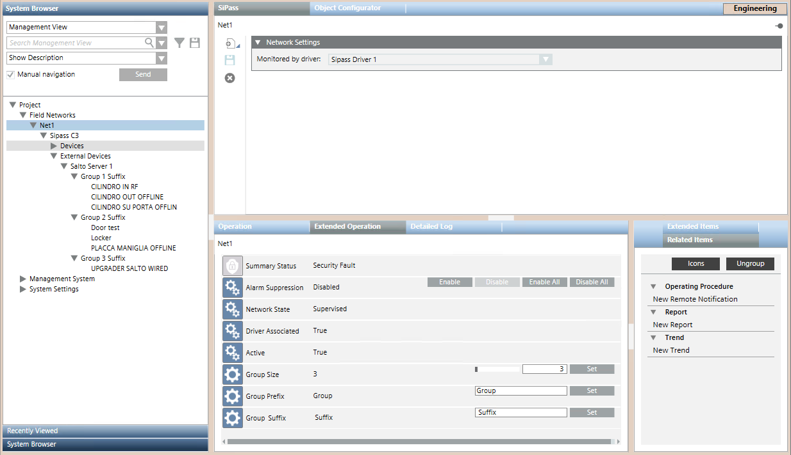

Grouping ACC Controllers and External Points
ACC controllers and external points—such as SALTO doors--can be shown grouped in System Browser to facilitate navigation. The default group size is 100, and the default group names are Group1, Group2, and so on. Within the groups, the objects are ordered alphabetically based on the description received from the SiPass server.

After a tree restructuring due to grouping, some applications (graphics, views, macro/reaction) maintain the links while others need to be checked.
You can customize the group size and naming as follows:
- System Browser is in Management View.
- In System Browser, select Project > Field Networks > [SiPass network].
- Select the Extended Operation tab.
- To change the Group Size:
a. Enter a number (minimum 3, maximum 500), or drag the bar.
b. Click Set. - The group names are constructed from a sequential number (1, 2, 3, …) with configurable text before and after, as follows:
<prefix>[sequential number]<suffix>. To change the Group Prefix or Group Suffix:
a. Enter the desired text in the field.
b. Click Set. - To make the changes effective:
a. In System Browser select Project > Field Networks > [SiPass network] > [SiPass server].
b. In the Extended Operation tab, click Discover. - When the discovery finishes, the new group size and naming is applied in System Browser.
NOTE: After a tree restructuring due to grouping, some applications (graphics, views, macro/reaction) maintain the links while others need to be checked.
